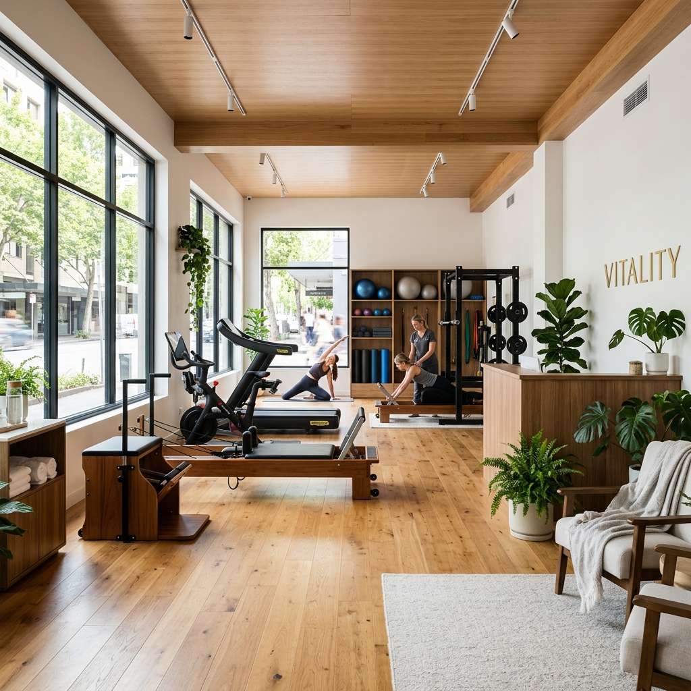

Muitas vezes, quando procuramos ajuda para melhorar a forma física ou tratar uma dor persistente, encontramos ambientes frios, métodos padronizados e uma enorme falta de atenção individual. Foi exatamente isso que quisemos mudar.
O nosso espaço em Lousada nasceu de uma vontade muito genuína: criar um local onde a saúde física e mental caminhassem de mãos dadas. Sem pressas. Sem cobranças irreais.
Acreditamos que cada pessoa traz consigo uma história. As dores que sentes, as limitações que tens ou o facto de nunca teres gostado de treinar fazem parte de ti, e nós estamos aqui para ouvir essa história primeiro, antes de qualquer treino.

“Para quem não fazia nada, começar a treinar aqui mudou muito a minha rotina. Sinto-me muito bem acompanhada e, pela primeira vez, motivada a cuidar de mim.”
“Neste espaço, que considero a minha segunda casa, consigo atingir objetivos e ir mais além. Eles acreditam em mim e ajudam-me a cuidar da minha saúde física e mental.”
Obrigada a todos os que confiam em nós diariamente.